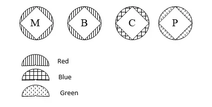

Urgency Categories and Transmission Protocol
The message information is divided into the following categories, by importance and urgency:
Radio messages in various categories of urgency are transmitted in the following order:
Reception and transmission of messages in other categories of urgency are interrupted.
After "Monolith" category messages, also called Vozdukh (Воздух), reception and transmission of messages in categories "Rocket", "Plane", and "Regular" are interrupted.
After "Monolith" and "Air" category messages, reception and transmission of messages in categories "Plane" and "Regular" are interrupted.
After "Monolith", "Air", and "Rocket" category messages, reception and transmission of "Regular" messages are interrupted.
Messages are transmitted after "Plane" category messages, in order of their arrival.
When operating an open radio channel, the category of message's urgency is coded via cipher table of radio operator on duty, or using a different method.
When using international call signs, the category of message's urgency is transmitted openly in abbreviated form in Russian:
Received and printed messages are color-coded by their urgency:

The following signals are classified based on threat level: B/C (Low), Б/B (High), A/A (Full)
("Diligent Sower") – Low level terrorist threat training signal
("Unimportant Epilogue")
("Depressing Terrain")
("Careful Winner") – Signal to cancel orders
("Tenacious Hawk")
("Spontaneous Fervor")
("Cruel Standard")
("Bloodless Trail") – Signal to cancel orders